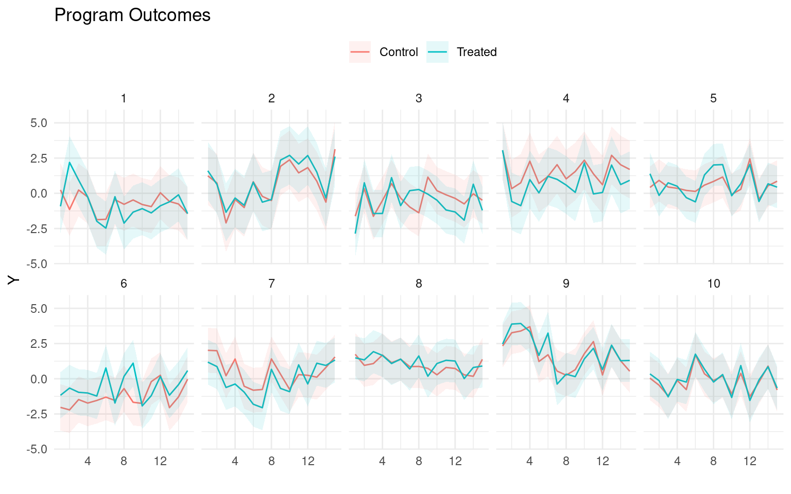
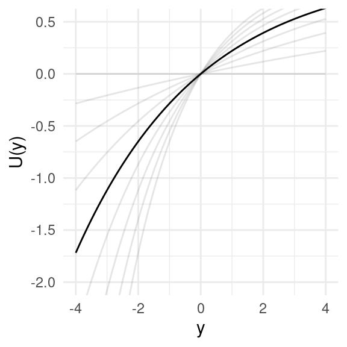
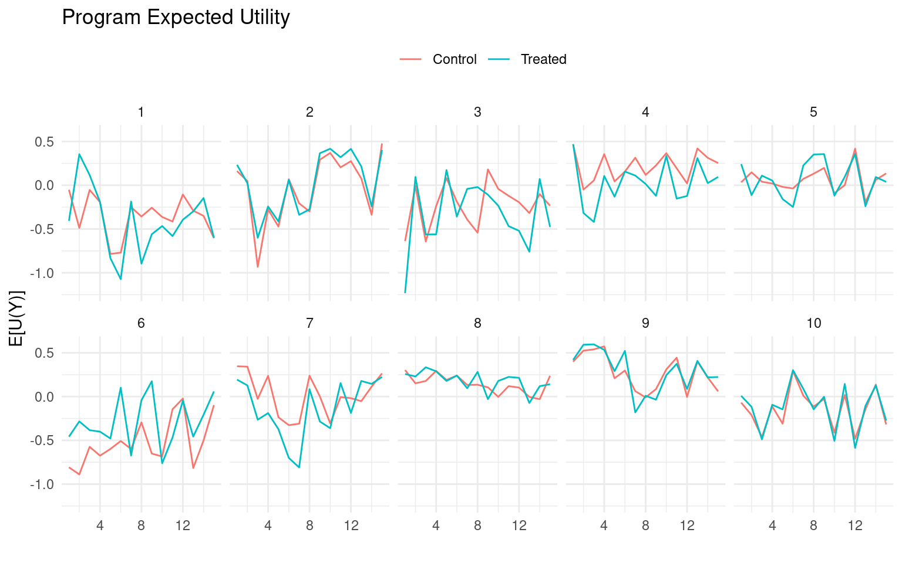
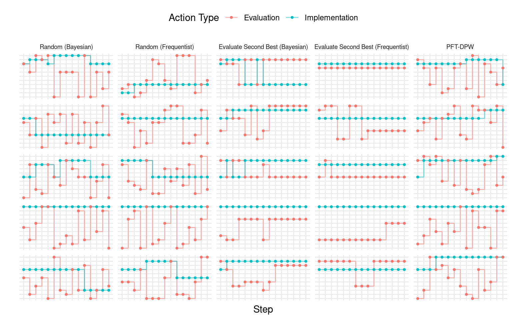
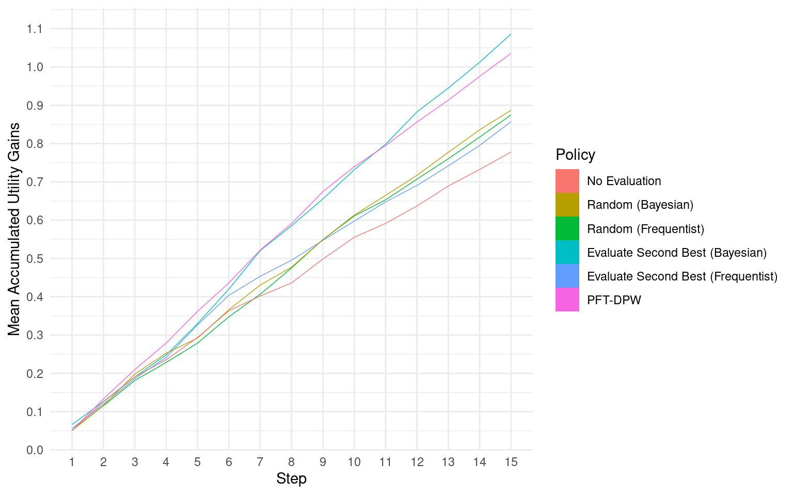
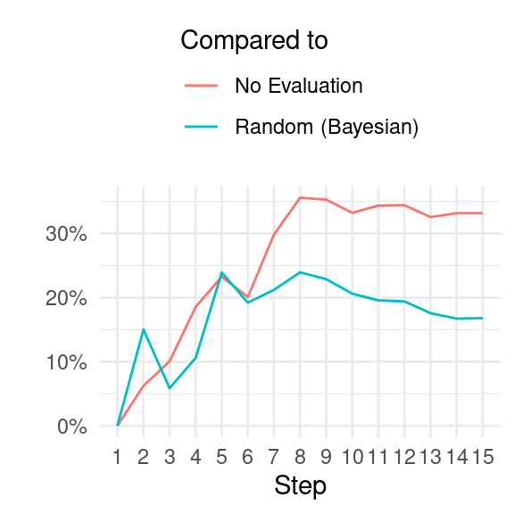
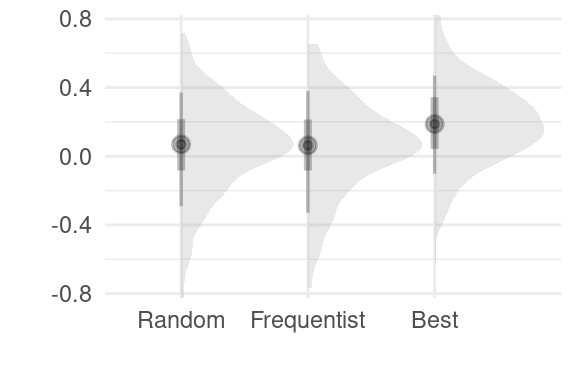
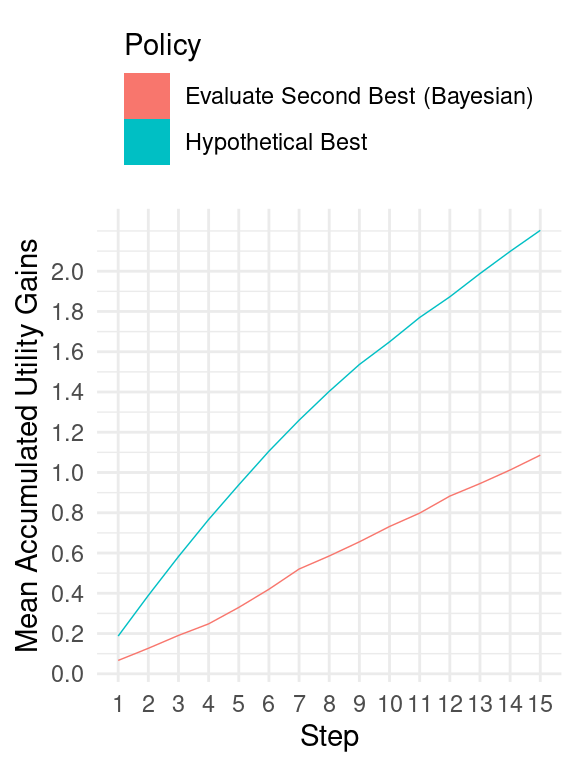

The Funder’s Meta-Problem
1 Introduction
The main goal of this simulation study is to analyze the sequential decision problem encountered by organizations involved in evaluating and funding charities from the perspective of Effective Altruism, which seeks to maximize the positive impact of donations on a global scale. In particular, the study aims to compare different decision-making policies for two key tasks:
- Selecting programs to fund from a list of programs for which effectiveness is only partially observable, taking into account the inherent uncertainties in program outcomes and impact.
- Determining which programs to re-evaluate in order to incrementally improve the decision-making process for program selection (i), by updating information and adjusting funding allocations accordingly.
By investigating and evaluating various decision-making policies within this framework, the study aims to contribute insights into how organizations can make more informed and effective funding decisions, with the ultimate goal of maximizing positive impact and optimizing resource allocation for charitable purposes.
My objective is not to identify the optimal policy, but rather to explore the potential for welfare improvement using alternative policies to those conventionally used. It’s important to note that I am simplifying these policies for tractability and not considering all their complexities and context-specific adjustments that expert decision-makers may introduce. Nevertheless, I believe this study captures the essence of how conventionally used policies may underperform in certain scenarios.
Specifically, I aim to highlight the limitations of the following policies: (a) never re-evaluating programs and relying solely on initial evaluations, (b) randomly re-evaluating programs, and (c) using null hypothesis significance testing (NHST) in a simple heuristic policy. I will compare these conventional policies against policies that utilize a partially observable Markov decision process (POMDP) algorithm and a simple heuristic policy that uses Bayesian hierarchical models. Through my analysis, I have found that the alternative policies are able to increase accumulated discounted utility by at least 20 percent after a few steps.
Furthermore, it is important to highlight that while the framework of the implementation-evaluation problem in this study draws inspiration from the decision-making challenges faced by funding organizations in the realm of international development and global health charities, it is also relevant to the broader context of Effective Altruism. The decision problems faced by Effective Altruism practitioners often involve complex trade-offs and uncertainties, and the insights gained from this study may have broader implications for decision-making in these domains as well.
The funder’s problem is modeled as a sequence of decisions made at discrete intervals, given a finite set of programs with uncertain impact on a set of populations. The funder selects optimal programs to implement based on their beliefs about the counterfactual outcomes of these programs for their targeted populations, and decides what data to collect to update these beliefs for the next decision point. The environment and problem are intentionally kept simple to ensure tractability, with the understanding that further studies may revisit these assumptions iteratively.
Thus the problem is modeled as a bandit problem, but without the restriction of only being able to evaluate implemented programs. Each program is assumed to target a particular population without any overlap, and the cost of implementation is held fixed and equal for all programs. There are no new programs entering the problem over time. The state of each program varies over time and is drawn from a hierarchical and stationary program hyperstate, which determines the data generating process for observed data when a program is evaluated.
While the optimal method to select a program for implementation is a probabilistic one, taking into account the distribution of counterfactual quantities and any available prior information, I also consider the commonly used null hypothesis significance testing (NHST) approach.1 However, my focus is not on comparing the probabilistic and NHST decision rules, but rather on the sequential nature of these decisions in the presence of heterogeneity in program effectiveness. I aim to examine the potential to improve welfare by enhancing the planning scheme used to select programs for re-evaluation, which I refer to as the meta-problem.
2 The Environment
As mentioned previously, in this study, a simplified environment is utilized while striving to capture the most relevant aspects of the real-world context. The funder is assumed to be faced with a set of programs, denoted as \(\mathcal{K}\), and must decide which program(s) to fund and which program(s) to re-evaluate. This decision needs to be made repeatedly over a series of steps.
The environment is modeled as a multi-armed bandit (MAB) framework, where each program or intervention is represented as a bandit with a stochastic causal model. In the sequential environment, at each step, a new state is drawn from a hyperstate that determines the outcomes of the targeted population. This hyperstate is used to simulate the underlying uncertainty and variability of real-world interventions, capturing the inherent uncertainties in program outcomes and their effects on the population.
By employing a MAB framework and incorporating hyperstates, this study aims to capture the dynamic nature of decision-making in funding programs, where the funder must adapt and update their choices over time based on changing states and outcomes. This approach allows for exploring different decision-making policies and their impact on program selection and re-evaluation, in order to optimize resource allocation and improve the effectiveness of charitable funding decisions.
For each program \(k\), we model the data generating process for each individual’s outcome at step \(t\) as,
\[\begin{align*} Y_{t}(z) &\sim \mathtt{Normal}(\mu_{k[i],t} + z\cdot \tau_{k[i],t}, \sigma_{k[i]}) \\ \\ \mu_{kt} &\sim \mathtt{Normal}(\mu_k, \eta^\mu_k) \\ \tau_{kt} &\sim \mathtt{Normal}(\tau_k, \eta^\tau_k) \end{align*}\] where \(z\) is a binary variable indicating whether a program is implemented or not, which means \(\tau_{kt}\) is the average treatment effect. We therefore denote the state of a program to be \(\boldsymbol{\theta}_{kt} = (\mu_{kt}, \tau_{kt}, \sigma_k)\).
On the other hand, the hyperstate for each program, \(\boldsymbol{\theta}_k = (\mu_k, \tau_k, \sigma_k, \eta^\mu_k, \eta^\tau_k)\), is drawn from the prior \[\begin{align*} \mu_k &\sim \mathtt{Normal}(0, \xi^\mu) \\ \tau_k &\sim \mathtt{Normal}(0, \xi^\tau) \\ \sigma_k &\sim \mathtt{Normal}^+(0, \xi^\sigma) \\ \eta^\mu_k &\sim \mathtt{Normal}^+(0, \xi^{\eta^\mu}) \\ \eta^\tau_k &\sim \mathtt{Normal}^+(0, \xi^{\eta^\tau}), \\ \end{align*}\] where \(\boldsymbol{\xi} = (\xi^\mu, \xi^\tau, \xi^\sigma, \xi^{\eta^\mu}, \xi^{\eta^\tau})\) are the hyperparameters of the environment. This means that while each program has a fixed average baseline outcome, \(\mu_k\), and average treatment effect, \(\tau_k\), at every step, normally distributed shocks alter the realized averages.
In this environment, the hierarchical structure of the hyperstate represents the inherent heterogeneity of program effectiveness over time, highlighting the limitations of relying solely on a single evaluation of a program at a particular point in time. The assumption is made that this variation in effectiveness follows a purely oscillatory pattern without any trends. While funders should also be concerned about variations in effectiveness when programs are implemented in different contexts, this aspect is ignored in this simplified environment, assuming that the time variation captures the general problem of heterogeneity over time and context. As the states in the hyperstate vary randomly and independently, the objective of the funder is to learn about the underlying hyperstate, rather than predicting the next realized state.

The funder is never aware of the true state of the world — the true counterfactual model of all programs’ effectiveness — but they are able to evaluate a program by collecting data and updating their beliefs. I assume that the funder has an initial observation for each program under consideration. This could be data from an earlier experiment or could represent the funder’s or other experts’ prior beliefs.

In the evaluation of which program to implement, the agent is assumed to be maximizing welfare, which is measured using a utility function. The program outcomes, as mentioned earlier, are represented in terms of an abstract quantity, such as income. By incorporating a utility function, the analysis takes into account the possibility of risk aversion and diminishing marginal utility, recognizing that it may be more optimal to prioritize increasing the utility of individuals with lower baseline utility, even if it has relatively lower cost-effectiveness, or to choose programs with lower uncertainty. The utility function used in this study is the exponential utility function.
When there is uncertainty or variability in the outcomes of different programs, it is important to work with expected utilities to account for this variability. For instance, if we have information on the means and standard deviations of outcomes over time, denoted as \(\mu_{kt} + z\cdot \tau_{kt}\) and \(\sigma_k\), respectively, the expected utility can be calculated as in Figure 3.

3 The Problem
Now that the environment in which the funder operates has been described, the problem they are trying to solve can be addressed. The funder is confronted with a set of \(K\) programs and must make two decisions, taking two actions:
- Select one program to fund (i.e., to implement) or none.
- Select one program to evaluate or none.
At every time step \(t\), the agent must choose a tuple \((m,v)\) from the action set \[\mathcal{A} = \{(m,v): m, v\in \mathcal{K}\cup\{0\}\},\] where \(m\) represents the program to be funded (with \(0\) representing no program), and \(v\) represents the program to be evaluated (with \(0\) representing no evaluation).
This presents a simpler problem than is typical of a multi-armed bandit problem; there is no real trade-off to make here between choosing the optimal program to fund and gathering more information on which is the optimal program. Nevertheless, we are confronted by an evaluative problem such that we must choose how to gather information most effectively. Furthermore, while a typical multi-armed bandit problem is not viewed as sequential in the sense that an action at any step does not change future states, we can reformulate our problem to use the funder’s beliefs about parameters of the programs’ causal models as the state (Morales 2020; Kochenderfer, Wheeler, and Wray 2022).
In that case, the problem is now a Markov decision process (MDP). The agent needs a policy, \(\pi(b)\), that selects what action to take given the belief \(b_t(\boldsymbol{\theta})\) over the continuous space of possible states. Putting this together we get the state-value function \[ \begin{equation*} \begin{aligned} V_\pi(b_{t-1}) &= \int_{\Theta,\mathcal{O}} \left[R(a_t, \boldsymbol{\theta}) + \gamma V_\pi(b_{t})\right]p(o\mid\boldsymbol{\theta}, a_t)b_{t-1}(\boldsymbol{\theta})\,\textrm{d}\boldsymbol{\theta}\textrm{d}o \\ \\ a_t &= \pi(b_t) \\ R(a, \boldsymbol{\theta}) &= E_{Y\sim\boldsymbol{\theta}}[U(Y(a))] = \sum_{k\in\mathcal{K}} E_{Y_k\sim\boldsymbol{\theta}_k}\left[U(Y_{k}(a^m_k))\right], \end{aligned} \end{equation*} \tag{1}\]
where \(o \in \mathcal{O}\) is the data collected based on the evaluation action for a particular program, and using it we update \(b_{t-1}\) to \(b_{t}\).
So given the current belief \(b_{t-1}\) and the policy \(\pi\), the agent estimates both the immediate reward and future discounted rewards – given an updated belief \(b_{t}\) continguent on the data collected \(o\) – and so forth recursively. Based on this the accumulated returns would be \[ G_{\pi,t:T} = \sum_{r=t}^T \gamma^{r-t}E_{\boldsymbol{\theta}_r\sim b_{r-1}}[R(\pi(b_{r-1}), \boldsymbol{\theta}_r)], \] where \(T\) is the terminal step.
Unlike a typical MDP, the agent in this case does not observe the actual realized reward at each step, but must estimate it conditional on their beliefs. Program implementers do not automatically receive a reliable signal on the observed and counterfactual rewards. This is an important aspect of the funder’s problem: while in an MDP, we would normally observe a reward for the selected action, or some noisy version of it; in the funder’s environment, all rewards are inferred.
4 The Plans
Now, let’s discuss the policies that will be evaluated as part of the funder’s meta-problem:
- No evaluation, where we never re-evaluate any of the programs and only use our initial beliefs, denoted as \(b_0\), to decide which program to implement.
- Random evaluation, where at every time step \(t\), we randomly select one of the \(K\) programs to be evaluated. For example, this happens if studies are conducted by researchers in an unplanned manner.
- Evaluate second-best, where at every time step \(t\), we select the program that has the second highest estimated reward for evaluation.
- Particle Filter Tree with Progressive Depth Widening (PFT-DPW), where we use an offline Monte Carlo Tree Search (MCTS) policy variant, to select the program to evaluate (Sunberg and Kochenderfer 2018).2
For all the policies being experimented with, we maintain a belief about the expected utility of implementation counterfactuals. We use a hierarchical Bayesian posterior to represent our updated beliefs for all the policies. For the PFT-DPW policy, we use a particle filter to efficiently manage these beliefs as we iteratively build a tree of action-observation-belief trajectories.

For the random and evaluate-second-best policies, I also consider a simple frequentist NHST approach. This involves running a regression on all the observed data, testing whether the treatment effect is statistically significant at the 10 percent level, and assuming the point estimate to be the true treatment effect if it is statistically significant, and assuming it to be zero otherwise. It’s important to note that using frequentist inference in this context essentially ignores uncertainty, but we still use the expected utility based on \(\sigma\). This form of inference is intended to highlight the limitations of binary decision-making based solely on statistical significance tests or arbitrary thresholds, instead of quantifying uncertainty. Although this approach is a simplification, it helps keep the argument intuitive.
The motivation for selecting these policies/algorithms/heuristics is not to determine an optimal one, but rather to compare and contrast commonly used approaches. Specifically, the frequentist no-evaluation and random policies are chosen as they closely resemble the practices often employed by funders and implementers in real-world scenarios.
So given this set of policies, \(\Pi\), the meta-problem that we want to solve is choosing the best policy, \[ \max_{\pi \in \Pi} W_T(\pi) = E_{\boldsymbol{\theta}\sim\boldsymbol{\xi}}\left\{ \sum_{t=1}^T\gamma^{t-1}E_{\boldsymbol{\theta}_t\sim\boldsymbol{\theta}}[R(\pi(b_t), \boldsymbol{\theta}_t)] \right\}. \tag{2}\] Notice how this differs from the funder’s problem in Equation 1: here we assume we know the hyperstates and states which we draw from the prior, \(\boldsymbol{\xi}\), not from beliefs, \(b\).
5 Results
In this simulation experiment, we run a total of \(S = r n_episodes\) episodes.3 For each episode, we draw \(K\) hyperstates from the prior, denoted as \(\boldsymbol{\theta}_s\sim\boldsymbol{\xi}\), and then for each step within the episode, we draw states denoted as \(\boldsymbol{\theta}_{st}\sim\boldsymbol{\theta}_s\). Next, we apply each of our policies to this episode, making decisions on which programs to implement and which ones to evaluate in order to update beliefs \(b{st}\). This allows us to observe the trajectory of \((b_{s,0}, a_{s,1}, o_{s,1}, b_{s,1}, a_{s,2}, o_{s,2}, b_{s,2},\ldots)\) for each policy, given the same states and hyperstates.
To assess the performance of the policies, we compare their mean accumulated discounted utility to the same quantity when none of the programs are implemented. In Figure Figure 5, we can observe how this difference evolves over the \(T\) steps of all the simulation episodes. We can see that the PFT-DPW and Bayesian evaluate-second-best policies perform the best, with higher accumulated discounted utility compared to other policies. The frequentist policies and the random Bayesian policy show lower performance. The no-evaluation policy, where decisions are made based only on the initial belief \(b_0\), performs the worst among all the policies.


To provide a clearer comparison, we calculate the percentage difference between the highest performing policies and two baseline policies: (i) the no-evaluation policy, and (ii) the random Bayesian policy (which is roughly on par with the random frequentist policy). When compared to the policy of never re-evaluating a program once it is selected for implementation, we observe that the Bayesian evaluate-second-best and the PFT-DPW offline policies show an average accumulated welfare that is more than 20 percent higher after four episode steps, and surpasses 30 percent after seven steps. In comparison to the frequentist policies (evaluate-second-best and random), the highest performing policies show around 20 percent improvement after five steps.
6 Conclusion

In conclusion, through the construction of a simple simulacrum of the problem faced by an Effective Altruism funder and the consideration of planning policies over time, it is evident that there is a significant gap in accumulated welfare between the more naive versions of policies and the more probabilistic and sophisticated policies. This gap becomes more pronounced when we consider the sequential problem, as opposed to the one-shot problem. For instance, in Figure 7, we can see that there is little difference between a frequentist NHST policy and a probabilistic one in the first step. However, as more steps are taken, differences between the policies become apparent, underscoring the importance of considering the longer-term implications of planning policies.

Even considering these factors, the gap between our best performing policy and the best possible hypothetical policy remains substantial (as seen in Figure 8). This suggests that there is likely more room for improvement in order to approach an optimal approach4.
Here are some possibilities for enhancing this study to better reflect real-world environments and develop more effective policies (in no particular order):
- Introduce varying program costs to consider the question of cost-effectiveness, as the cost of implementing different programs can have a significant impact on decision-making.
- Explore how the concept of leverage could influence policy decisions, as certain programs may have a greater ability to leverage resources and create broader impact.
- Allow for different population sizes in the simulation, as population size can affect the scalability and impact of interventions.
- Consider the potential for programs to target multiple populations with some correlation, and for populations to support multiple programs with potential complementarity and substitution effects, as this can reflect the complexity and interrelatedness of real-world scenarios.
- Incorporate non-stationarity into the hyperstates, effectively adding correlation between steps and potentially improving predictions and the need for re-evaluation, as real-world environments are dynamic and evolve over time.
- Account for potential diminishing treatment effects over time as the control outcome moves closer to the treatment level, as this can affect the long-term effectiveness of interventions.
- Consider the quality of programs or population compliance and how it may vary over time, as program quality and population behavior can impact outcomes in real-world scenarios.
- Explore differences in evaluations for implemented programs versus non-implemented ones, as this can introduce potential scale effects and reflect the challenges of transitioning from proof-of-concept studies to scaled programs.
- Restrict the implementation action choices to prevent rapid changes between programs due to fixed costs, as it may not always be feasible to shut down and resume programs in quick succession. For example, disallow restarting a program once abandoned to reflect real-world constraints.
- Allow for program entry and exit over time to capture the dynamic nature of program availability and effectiveness.
- Analyze the sensitivity of the simulation to varying the environment’s hyperparameters, \(\boldsymbol{\xi}\), to better understand the robustness of the results to different parameter settings.
- Consider offline policy calculation methods (e.g., deep reinforcement learning) to further optimize policy performance.
These enhancements can help to make the simulation model more accurate and reflective of real-world complexities, and enable the development of more effective policies for decision-making in the context of Effective Altruism funding.
References
Footnotes
Given a risk-neutral utility function and very weakly informed priors, both these methods are often assumed to result in very similar decisions. However, a winning entry in GiveWell’s Change Our Minds Context by Haber (2022) showed that threshold-based method, like NHST, suffers from bias caused by the winner’s curse phenomenon. A big difference between what I am investigating here and Haber’s work is that I am looking beyond the one-shot accept/reject decision.↩︎
The PFT-DPW algorithm is a hybrid approach for solving partially observable Markov decision processes (POMDPs) that combines particle filtering and tree-based search. It represents belief states using a tree data structure and uses double progressive widening to selectively expand promising regions of the belief state space. Particle weights are used to represent the probabilities of different belief states, and these weights are updated through the particle filtering and tree expansion process. Actions are selected based on estimated belief state values, and the tree is pruned to keep it computationally efficient.↩︎
Why not more? Each simulated episode can be time-consuming, especially when using the PFT-DPW policy which involves 1,000 iterations at every step before selecting a program for evaluation. Even simpler policies, such as the random policies, take time when updating beliefs using a Bayesian model that fits all the observed data for a program at every evaluation.↩︎
It should be mentioned that in this experiment I did not attempt simulations very varying values of the prior hyperparameters, \(\boldsymbol{\xi}\), or the PFT-DPW algorithm hyperparameters.↩︎